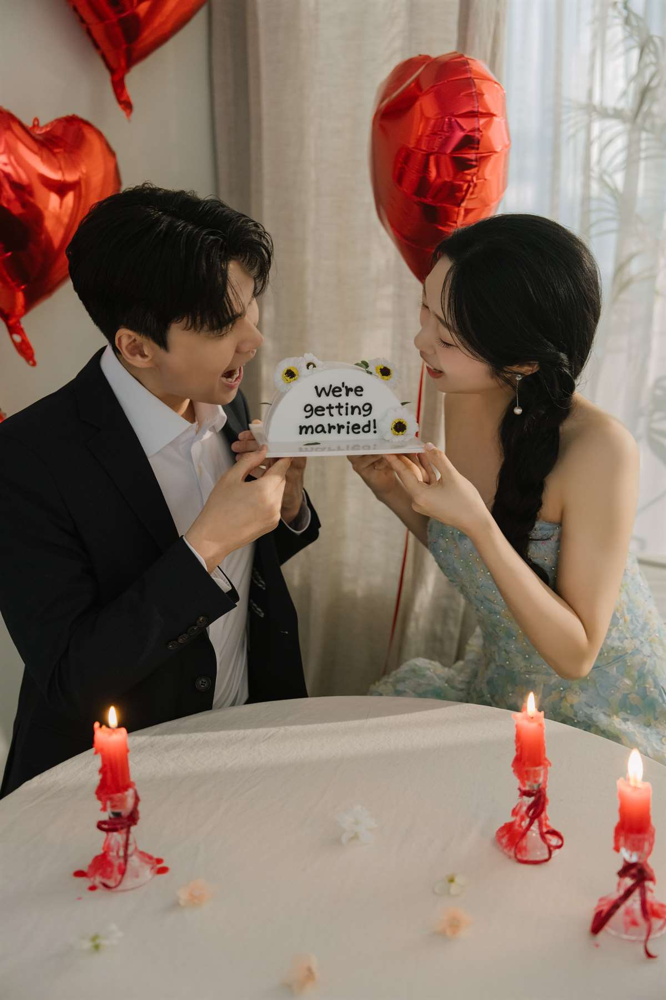
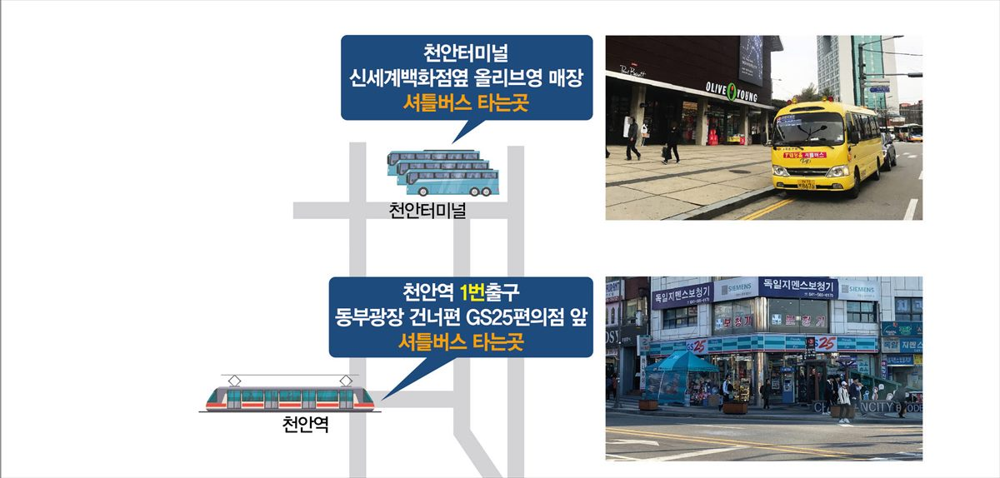
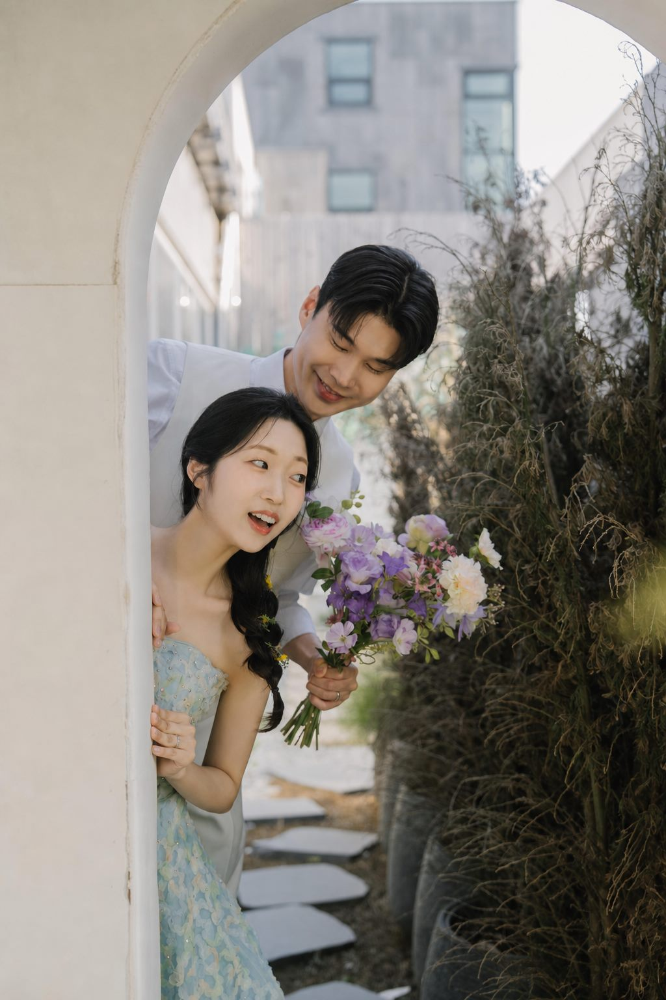

A Promise in Winter
You Are Invited
모시는 글
겨울의 한가운데에서, 두 사람이 평생 함께 걸을 한 곡의 첫 박자를 맞춥니다. 오래 기다려 온 이 하루에 귀한 걸음으로 함께해 주시면 더없는 기쁨이겠습니다.

Save the Date
예식 안내
| 일 | 월 | 화 | 수 | 목 | 금 | 토 |
|---|---|---|---|---|---|---|
| 1 | 2 | 3 | 4 | 5 | ||
| 6 | 7 | 8 | 9 | 10 | 11 | 12 |
| 13 | 14 | 15 | 16 | 17 | 18 | 19 |
| 20 | 21 | 22 | 23 | 24 | 25 | 26 |
| 27 | 28 | 29 | 30 | 31 |

Directions
티웨딩 천안 투데이홀
충청남도 천안시 동남구 목천읍 응원3길 27
천안IC보다 독립기념관IC, 남천안IC를 이용하시면 더욱 편리합니다
독립기념관IC 6km · 7분 / 남천안IC 3.5km · 5분
셔틀버스
운행
첫 예식 1시간 전부터 20~30분 간격
천안터미널
신세계백화점 옆 올리브영 앞 탑승 (스타벅스·애슐리 사이) · "올리브영 천안타운" 검색
천안역
1번 출구 동부광장 건너편 GS25편의점 앞 탑승 · "GS25 천안역점" 검색
25인승 버스로 예식에 한해 운행하며, 행사 일정과 비수기 시즌에는 운행이 변동될 수 있습니다.

승차장 사진 크게 보기자가용
내비게이션 "티웨딩 천안" 또는 주소 "응원3길 27" 검색 · 주차 1,500대 무료 (도착 후 주차요원의 안내를 받으세요)
버스
세광엔리치빌 정류장 하차 · 24, 310, 381, 382, 383, 400, 402, 500, 512, 530, 531, 540
전철 · 기차 · KTX
천안역에서 기차·전철 하차 후 1번 출구 동부역에서 24, 383, 400, 401, 500번 승차 · KTX 천안아산역은 아산역에서 전철을 타고 천안역에서 갈아탑니다

Our Families
가족 소개
박주연 강순호의 삼남 박비오
조현식 이경화의 장녀 조예나
RSVP
참석 여부
참석 여부를 알려 주시면 준비에 큰 도움이 됩니다.
참석 여부를 알려 주세요.
With Gratitude
마음 전하실 곳
참석이 어려우신 분들을 위해 안내드립니다. 너그러이 양해 부탁드립니다.
계좌번호 보기
신랑측
신부측
Guestbook
축하의 한마디
두 사람에게 짧은 축하 한 줄을 남겨 주세요.
축하 메시지를 남겨 주세요.
With All Our Hearts